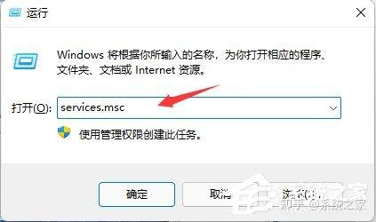
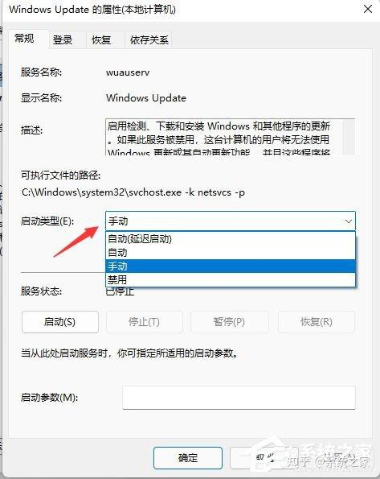
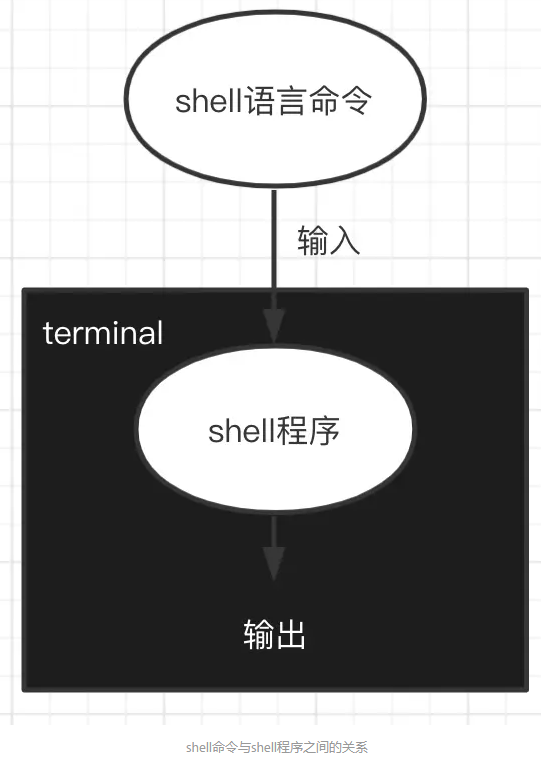
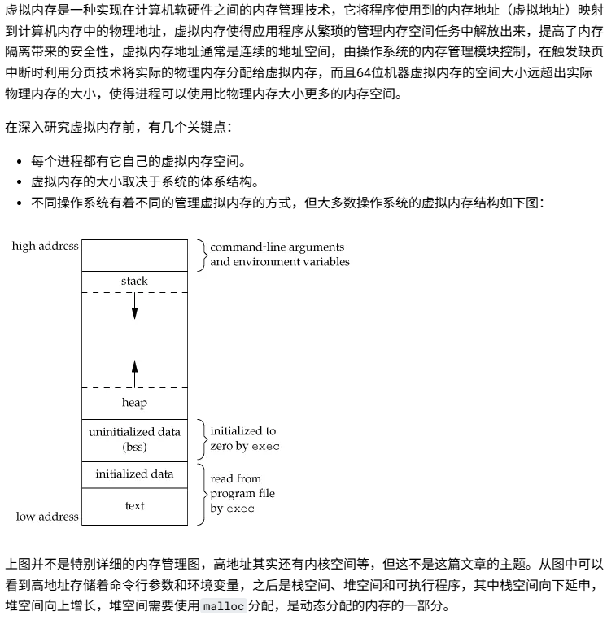
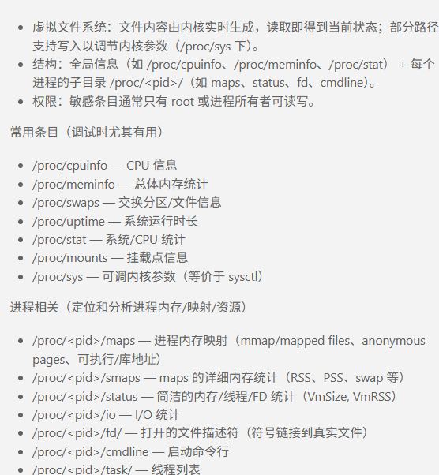

OS¶
Windows¶
系统重装¶
下载ISO¶
Windows 11 ISO Download – Official Direct Download Links - TechPP
制作PE¶
纯净无广告，又强又趁手的维护工具，FirPE使用和DIY指南_哔哩哔哩_bilibili
FirPE:默认,全新制作
跳过联网¶
（Fn+）Shift+F10快捷键调出命令提示符窗口
输入：OOBE\BYPASSNRO
如果一开始就连了网线就没有这个步骤
windows激活&office激活¶
office安装直接去官网
power shell 下打开输入irm win.zyqq.top | iex,然后根据提示
或者irm https://get.activated.win | iex
相关初始化设置¶
使用dism++
貌似很久没更新了
系统备份及还原方法¶
win11一键备份还原系统方法_系统之家一键重装系统官网 (163987.com)
桌面右键改回win10¶
修改win11右键菜单、右键选项、还原win10右键菜单-CSDN博客
win+r打开运行
输入cmd，按下ctrl+shift+enter以管理员身份运行
在命令行里输入reg.exe add "HKCU\Software\Classes\CLSID\{86ca1aa0-34aa-4e8b-a509-50c905bae2a2}\InprocServer32" /f /ve
重启（重启电脑或File Explorer）
重启后即可使用win10风格右键菜单
恢复方法：如果想回到win11风格，在命令行输入reg.exe delete "HKCU\Software\Classes\CLSID\{86ca1aa0-34aa-4e8b-a509-50c905bae2a2}\InprocServer32" /va /f .重启后恢复win11右键
关闭自动更新¶
在运行中输入“services.msc”回车确定打开服务栏。

3、在服务中找到“windows update”，双击打开它。

4、然后将启动类型更改为“禁用”，再点击一下“停止”即可。

win11配置windows ssh server¶
Windows 上的 OpenSSH：安装、配置和服务器连接指南 - 系统极客
体验优化插件¶
dism++¶
貌似很久没有更新了
PowerToy¶
看了一下感觉作用不大
Geek¶
Everything¶
Linux¶
SHELL¶
命令解释器
查看SHELL类型 echo $SHELL
如果想知道自己系统安装了哪些shell : cat /etc/shells

分类¶
参考：https://www.jianshu.com/p/a891af6f87e0
- zsh
很多人的 mac 中会使用 zsh 而不是 bash，一大半是因为 oh-my-zsh 这个配置集，它兼容 bash，还有自动补全等好用的功能。
- sh
sh的全称是 Bourne shell，由 AT&T 公司的 Steve Bourne开发，为了纪念他，就用他的名字命名了。sh 是 UNIX 上的标准 shell，很多 UNIX 版本都配有 sh。sh 是第一个流行的 shell。
- csh
sh 之后另一个广为流传的 shell 是由柏克莱大学的 Bill Joy 设计的，这个 shell 的语法==有点类似C语言==，所以才得名为 C shell ，简称为 csh。
- tcsh
tcsh 是 csh 的增强版，加入了命令补全功能，提供了更加强大的语法支持。
-
ash一个简单的==轻量级==的 Shell，占用资源少，适合运行于低内存环境，但是与下面讲到的 bash shell 完全兼容。
-
bash
bash由 GNU 组织开发，保持了对 sh shell 的兼容性，是各种 Linux 发行版默认配置的 shell。bash 兼容 sh 意味着，针对 sh 编写的 shell 代码可以不加修改地在 bash 中运行。尽管如此，bash 和 sh 还是有一些不同之处：一方面，bash 扩展了一些命令和参数；另一方面，bash 并不完全和 sh 兼容，它们有些行为并不一致，但在大多数企业运维的情况下区别不大，特殊场景可以使用 bash 代替 sh。
csh和bash的语法区别¶
centos和ubuntu的命令区别¶
一图看懂centos和ubuntu命令区别-腾讯云开发者社区-腾讯云

FileSystem¶
-
/：根目录，所有其他目录和文件的起始点。
-
/bin：存放基本二进制文件，如ls、cp、mv等命令。
-
/sbin：存放系统二进制文件，通常是系统管理员使用的命令，如fdisk、ifconfig等。
-
/etc：存放系统配置文件，如passwd、fstab、hosts等。
-
/dev：包含设备文件，这些文件代表硬件设备，如/dev/sda表示第一个SATA硬盘。
-
/proc：虚拟文件系统，提供关于系统硬件和运行进程的信息。
-
/var：包含经常变化的文件，如日志文件/var/log和邮件系统/var/mail。
-
/tmp：临时文件目录，用于存放临时文件，通常在系统重启时清空。
-
/usr：用户相关的应用程序和文件。/usr下的子目录通常包括：
/usr/bin：用户级别的程序。 /usr/sbin：系统管理员程序。 /usr/share：共享数据文件，如文档、图标等。 /usr/local：本地安装的程序和文件。
-
/lib：存放共享库文件，这些文件通常由/bin和/sbin中的程序使用。
-
/opt：附加应用程序的安装目录。
-
/boot：包含Linux内核和引导程序文件。
-
/home：用户的主目录，每个用户的家目录都挂载在/home/username。
-
/root：系统管理员（root用户）的家目录。
-
/mnt和/media：挂载临时文件系统，如USB驱动器、CD-ROM等。
-
/srv：服务相关的数据文件，如Web服务器的内容。
-
/sys：与/proc类似，是一个虚拟文件系统，提供对系统硬件的访问。
-
/lost+found：文件系统检查工具（如fsck）存放恢复的文件。
文件权限¶
7 代表 rwx（读、写、执行） 6 代表 rw-（读、写） 5 代表 r-x（读、执行） 4 代表 r--（读）
无sudo权限安装软件到个人目录下¶
两种方法：
- 自己 build
- 安装到local, 但是往往有很多其他依赖也需要安装到对应位置，麻烦
.sh脚本¶
shebang开头特殊行¶
这行告诉系统应该使用哪个解释器来执行脚本
#!/bin/bash
#! 是shebang的标识符，后面跟着解释器的路径
对于Python脚本#!/usr/bin/env python3.使用 /usr/bin/env 是为了确保系统能够在任何安装了Python的位置找到Python解释器，而不是硬编码路径。
环境变量¶
设置环境变量¶
export var
var='值'
#或export var='值'
#在.bashrc等文件中写了后，需要source再能生效
如果环境变量的值没有空格等特殊符号，可以不用单引号包含。
采用export设置的环境变量，在退出Shell后就会失效，下次登录时需要重新设置。如果希望环境变量永久生效，需要在登录脚本文件中配置。
变量名='值'
export 变量名
或export 变量名='值'
设置系统环境变量¶
在/etc/profile文件中设置¶
用户登录时执行/etc/profile文件中设置系统的环境变量。但是，Linux不建议在/etc/profile文件中设置系统环境变量。
在/etc/profile.d目录下设置¶
可以对不同的项目用.sh/.csh文件设置环境变量
这是Linux推荐的方法，不想要什么变量直接删除 /etc/profile.d下对应的 shell 脚本即可
在/etc/bashrc文件中设置环境变量¶
该文件配置的环境变量将会影响全部用户使用的bash shell。但是，Linux也不建议在/etc/bashrc文件中设置系统环境变量。
设置用户环境变量¶
- .bash_profile
- 当用户登录时执行，每个用户都可以使用该文件来配置专属于自己的环境变量。
- 但是现在没了？
- .bashrc
- 当用户登录时以及每次打开新的Shell时该文件都将被读取，不推荐在里面配置用户专用的环境变量，因为每开一个Shell，该文件都会被读取一次，效率肯定受影响。
- 但是现在都这么做0.0
PATH¶
- 可执行程序的搜索目录，可执行程序包括Linux系统命令和用户的应用程序。如果可执行程序的目录不在PATH指定的目录中，执行时需要指定目录。
- PATH环境变量存放的是目录列表，目录之间==用冒号
:分隔== - 最后的圆点.表示当前目录(加入了当前补录到PATH),如果PATH变量中没有包含圆点.，执行当前目录下的程序需要加./或使用绝对路径
- PATH缺省包含了Linux系统命令所在的目录（/usr/local/bin:/usr/bin:/usr/local/sbin:/usr/sbin），如果不包含这些目录，Linux的常用命令也无法执行（要输入绝对路径才能执行）
- /usr/bin里面有很多可执行文件
- 在用户的.bashrc文件中，会对PATH进行扩充
- 比如：
export PATH=$PATH:$HOME/bin
LD_LIBRARY_PATH¶
C/C++语言动态链接库文件搜索的目录
与PATH的格式相同
参考¶
linux环境变量 - a龙 - 博客园 (cnblogs.com)
安装方式的不同¶
ubuntu¶
- 使用
apt：
更新软件包列表：sudo apt update
安装软件包：sudo apt install package_name
卸载软件包：sudo apt remove package_name
查看安装过的包：apt list --installed
- 使用
apt-get（较旧的Ubuntu版本中常用）：
更新软件包列表：sudo apt-get update
安装软件包：sudo apt-get install package_name
卸载软件包：sudo apt-get remove package_name
- 使用
dpkg（直接操作.deb包）：
安装.deb文件：sudo dpkg -i package_name.deb
卸载软件包：sudo dpkg -r package_name
- 使用
pip（Python包管理工具）：
安装Python包：sudo pip install package_name
卸载Python包：sudo pip uninstall package_name
- 使用
make和源代码（用于安装从源代码编译的软件）：
通常需要先./configure，然后make，最后sudo make install
bsub¶
bsub 是一个在许多 Unix-like 系统中用于提交作业到批处理系统（如 LSF、PBS 或 Slurm）的命令。它允许用户在后台运行程序，而不会占用终端。
bsub < job_script.sh #提交任务
bsub -n 4 < job_script.sh #指定使用的节点数
bsub -R "span[hosts=1]" < job_script.sh #指定使用的CPU核心数
bkill <job_id> #终止
bjobs #查看作业状态
bjobs -l #详细信息
bqueues #查看队列状态
bhosts #查看系统资源
bsub -W 01:00 < job_script.sh #设置作业的运行时间限制
虚拟内存¶
之前说的程序的堆栈都是和虚拟内存交互的，具体的虚拟内存又依赖于操作系统

/proc¶
/proc 是内核在运行时导出的==虚拟文件系统==（procfs），用于呈现内核和进程的实时状态信息。它==不是磁盘上的真实文件==，而是内存中由内核动态生成的视图，常用于系统监控与调试。

参考¶
深入理解虚拟内存和malloc原理 | 图解内存分配全过程 | C++ 编程指南
后台程序返回前台¶
jobs –l 查看后台运行的进程
fg %n 让后台运行的进程n到前台来
#command &让进程在后台运行
#bg %n 让进程n到后台去
core文件¶
在一个程序崩溃时，它一般会在指定目录下生成一个core文件。core文件仅仅是一个内存映象(同时加上调试信息)，主要是用来调试的。
- 阻止系统生成core文件:
ulimit -c 0
当您收到
ulimit: command not found错误时，这是因为ulimit是 bash 和 sh 等 shell 的内置命令，而您可能正在使用 csh 或 tcsh 等不同的 shell。在 csh 中，对应的命令是limit。# 查看所有资源限制 limit # 查看特定资源限制（如 core 文件大小） limit coredumpsize # 设置 core 文件大小为 0 limit coredumpsize 0[!CAUTION]
永久生效要写到
.cshrc
ref¶
WSL¶
cmd¶
wsl -l -v
wsl --shutdown #关闭
wsl --list --verbose # 查看已安装的发行版、WSL 版本信息和当前状态
wsl --set-default <DistroName> # 重新指定默认发行版
wsl --export Ubuntu-22.04 e:\Ubuntu-22.04.tar#导出
wsl --unregister Ubuntu-22.04 #注销并卸载
wsl --import Ubuntu-22.04 E:\ubuntu2204 E:\Ubuntu-22.04.tar#导入
wsl --set-default <DistroName> # 重新指定默认发行版
环境配置¶
- windows 设置打开： 适用于 Linux 的 Windows 子系统 和 虚拟机平台


-
Linux 内核更新包：https://wslstorestorage.blob.core.windows.net/wslblob/wsl_update_x64.msi
-
bash wsl --list --verbose # 查看已安装的发行版、WSL 版本信息和当前状态 wsl --set-default <DistroName> # 重新指定默认发行版
Windows 11：WSL 2 安装和管理指南，3 种方法任你选 - 系统极客 (sysgeek.cn)
Win11 安装 Docker Desktop 和 WSL2 并进行安装位置迁移_windows 11 wsl 修改安装位置-CSDN 博客
常见问题¶
VmmemWSL 占用 CPU 或内存资源过高¶
Vmmem 进程(WSL)占用 CPU 或内存资源过高的解决办法-CSDN 博客
代理问题¶
WSL2 如何解决 clash 代理问题 - VariantConst
远程¶
公网远程¶
UU远程/向日葵/ToDesk
ToDesk越来越垃圾了——2025/12/12
VNC¶
常用软件¶
- TigerVNC(开源免费)
- RealVNC (个人免费)
设置¶
windows环境安装VNC及远程连接linux(centos7) - 银河星光 - 博客园 (cnblogs.com)
vnc和ssh的区别¶
主要区别：VNC服务器和SSH服务器有一些显著的区别。 首先，VNC服务器提供图形界面的远程访问和控制，可以让用户直观地操作计算机。 而SSH服务器主要用于远程命令行访问和文件传输，对于不需要图形界面的操作更为适用。 其次，VNC服务器在传输图形界面时消耗较多的网络带宽，因为它需要传输图像数据。 相比之下，SSH服务器的传输开销较小，因为它主要传输文本和命令。 此外，SSH服务器采用了加密和身份验证机制，提供了更高的安全性，而VNC服务器的安全性相对较弱，需要通过额外的措施来增强其安全性。 使用场景：VNC服务器适合需要通过==图形界面==进行远程操作的场景，例如远程协助、远程教学和讲座、远程演示等
ssh+设置DISPLAY可视化¶
mobaxterm启用X11 server¶
MobaXterm上


MobaXterm的Xserver是在win上的，而服务器的ip和win不一样，所以不能通过直接设置DISPLAY=0.0或者DISPLAY=localhost:0.0来指定Xserver
#bashrc
export windows_host=`ipconfig.exe | grep -n4 WSL | tail -n 1 | awk -F":" '{ print $2 }' | sed 's/^[ \r\n\t]*//;s/[ \r\n\t]*$//'`
export DISPLAY=$windows_host:0
#也可以直接export DISPLAY=${window_ip}:0
#比如export DISPALY=192.168.1.28:0.0 # 192.168.1.28为windows当前ip，如果windows系统重装需要重新设置
#还看到以下这个，没验证过
#export DISPLAY=$(awk '/nameserver / {print $2; exit}' /etc/resolv.conf 2>/dev/null):0 # in WSL 2
#export LIBGL_ALWAYS_INDIRECT=1
Pycharm设置DISPLAY¶


文件传输与同步¶
将本地文件复制到另一台服务器¶
scp/sftp/ftp